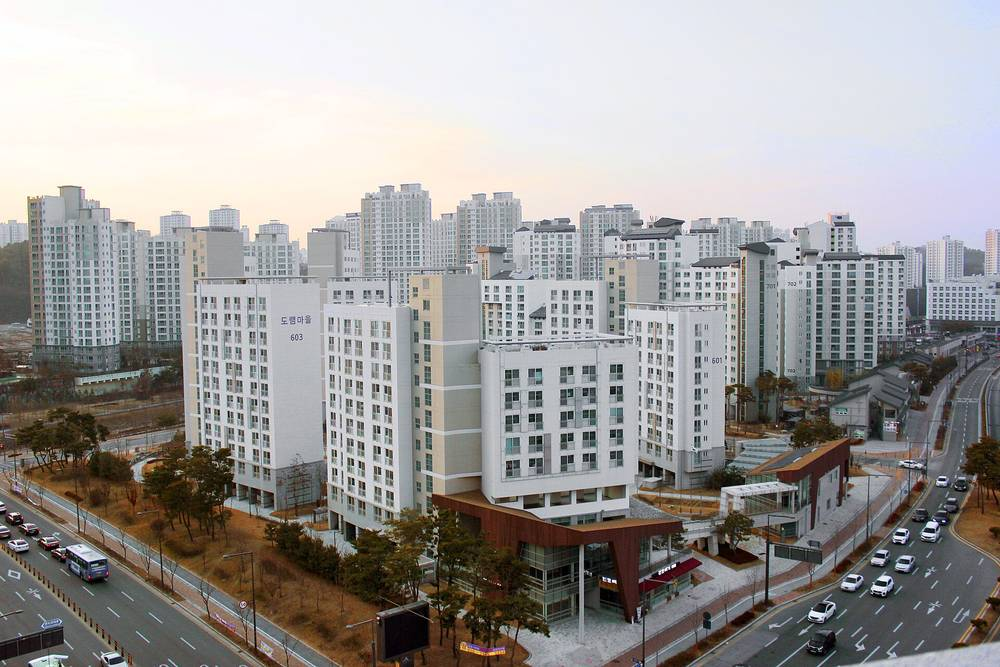

공공임대 아파트 태양광, 쓰고 남은 전기로 관리비 깎는다…LH, 세종 산울마을 4단지 238가구에 공동주택 첫 요금상계

태양광 246kW로 월 사용량의 약 49.1% 생산…LH "가구당 월평균 약 8,000원 추가 절감 기대", ZEB 5등급 이상 단지로 확대 검토
한국토지주택공사(LH)가 세종시 6-3생활권 M1블록의 행복주택 산울마을 4단지에서 태양광으로 만들고 단지에서 쓰고 남은 전기를 한국전력에 보내고 그만큼을 한전에서 받는 전기와 상계하는 '요금상계거래'를 시행한다고 3일 밝혔다. LH가 지은 공동주택에서 요금상계거래를 하는 것은 이번이 처음이다. 산울마을 4단지는 238가구 규모의 공공임대주택으로 LH의 첫 제로에너지건축물(ZEB) 3등급 단지이며, 태양광 설비는 모두 246kW, 가구당 1,035W로 ZEB 5등급 단지보다 약 70% 많다. 단지의 월평균 태양광 발전량은 월평균 전기 사용량의 약 49.1%에 이르며, LH는 지금의 자가소비 절감에 요금상계 효과가 더해지면 가구당 월평균 약 8,000원의 관리비가 추가로 줄어들 것으로 기대했다. LH는 한전과 협의해 ZEB 5등급 이상 단지 가운데 요금상계가 가능한 곳을 골라 설비 반영을 검토하고 있으며, 운영 성과를 보고 적용 대상을 넓힐 방침이다. 박현근 LH 공공주택본부장은 태양광 전력을 효율적으로 써서 입주민의 관리비 부담을 줄이고 "에너지 절감 효과를 일상에서 체감할 수 있게 할 것"이라고 말했다.
시민에너지 관점
오스트리아는 2017년 전력법을 고쳐 다세대 주택 주민이 건물 지붕의 '공동 발전설비'에서 나온 전기를 집집이 나눠 쓸 수 있게 했고, 세입자도 지붕 태양광의 몫을 갖는 길을 열었다. 산울마을 4단지는 LH 공동주택에서 처음으로 공공임대 입주민이 남는 태양광 전기의 이익까지 관리비로 돌려받게 된다는 점에서 반갑지만, 설비를 짓고 소유하는 쪽은 LH이고 입주민은 혜택을 받는 자리에 머문다는 점에서 시민이 출자해 주인이 되는 시민발전과는 다르다. 임대주택 입주민에게 출자까지 바라기는 어렵다는 걱정이 있지만, 소액이라도 입주민 협동조합이 운영과 수익 배분에 참여하면 남는 전기를 어떻게 쓸지, 설비를 얼마나 늘릴지를 입주민이 함께 정할 수 있다. LH는 요금상계를 다른 단지로 넓힐 때 입주민이 설비 운영에 참여하는 방안을 함께 검토하고, 정부는 공동주택 주민이 지붕 전기를 나눠 쓰고 거래할 수 있는 제도를 서둘러 마련해야 한다.
출처: 전기신문 2026-11-03 박윤 기자 원문 보기
출처: 연합뉴스 2026-11-03 오진송 기자 원문 보기
창간 전 시험 발행 기사입니다.
公共賃貸マンションの太陽光、使い切れなかった電気で管理費を減らす…LH、世宗サヌル村4団地238世帯で共同住宅初の料金相殺
太陽光246kWで月使用量の約49.1%を発電…LH「1世帯当たり月平均約8,000ウォンの追加節減を期待」、ZEB5等級以上の団地への拡大を検討
韓国土地住宅公社（LH）は3日、世宗市6-3生活圏M1ブロックの幸福住宅「サヌル村4団地」で、太陽光で発電し団地で使い切れなかった電気を韓国電力公社（韓電）に送り、その分を韓電から受け取る電気と相殺する「料金相殺取引」を実施すると明らかにした。LHが建てた共同住宅で料金相殺取引を行うのは今回が初めてだ。サヌル村4団地は238世帯規模の公共賃貸住宅で、LH初のゼロエネルギー建築物（ZEB）3等級団地であり、太陽光設備は合計246kW、1世帯当たり1,035WとZEB5等級の団地より約70%多い。団地の月平均の太陽光発電量は月平均の電力使用量の約49.1%に達し、LHは現在の自家消費による節減に料金相殺の効果が加われば、1世帯当たり月平均約8,000ウォンの管理費がさらに減ると見込んでいる。LHは韓電と協議し、ZEB5等級以上の団地のうち料金相殺が可能なところを選んで設備への反映を検討しており、運営成果を見て対象を広げる方針だ。LHのパク・ヒョングン公共住宅本部長は、太陽光の電力を効率よく使って入居者の管理費負担を減らし、「エネルギー節減の効果を日常で実感できるようにする」と述べた。
市民エネルギーの視点
オーストリアは2017年に電力法を改正し、集合住宅の住民が建物の屋根の「共同発電設備」で生まれた電気を各戸で分け合って使えるようにし、賃借人も屋根上太陽光の持ち分を持てる道を開いた。サヌル村4団地は、LHの共同住宅で初めて公共賃貸の入居者が余った太陽光電力の利益まで管理費として受け取れるようになる点で歓迎できるが、設備を建てて所有するのはLHで、入居者は恩恵を受ける立場にとどまるという点で、市民が出資して持ち主になる市民発電とは異なる。賃貸住宅の入居者に出資まで求めるのは難しいとの懸念もあるが、少額でも入居者の協同組合が運営と収益配分に加われば、余った電気をどう使うか、設備をどこまで増やすかを入居者が一緒に決められる。LHは料金相殺を他の団地に広げる際に入居者が設備運営に参加する方策も併せて検討し、政府は共同住宅の住民が屋根の電気を分け合い取引できる制度を急いで整えるべきだ。
出典: 電気新聞（韓国） 2026-11-03 パク・ユン記者 原文を読む
出典: 聯合ニュース 2026-11-03 オ・ジンソン記者 原文を読む
創刊前の試験発行記事です。
公租公寓光伏用余电抵减物业费…LH在世宗山蔚村4区238户首次在共同住宅实施电费抵扣
246kW光伏发电量约占月用电量的49.1%…LH"预计每户每月平均再省约8,000韩元"，研究推广至ZEB 5级以上小区
韩国土地住宅公社（LH）3日表示，将在世宗市6-3生活圈M1地块的幸福住宅山蔚村4区实施"电费抵扣交易"：把小区光伏发电自用后剩余的电力输送给韩国电力公社（韩电），再将这部分电量与从韩电购入的电量相抵。这是LH建造的共同住宅首次实施电费抵扣交易。山蔚村4区是238户规模的公共租赁住宅，也是LH首个零能耗建筑（ZEB）3级小区，光伏设备合计246kW，每户1,035W，比ZEB 5级小区多出约70%。小区月均光伏发电量约为月均用电量的49.1%；LH预计，在现有自发自用节省的基础上加上抵扣效果，每户每月平均物业费可再减少约8,000韩元。LH正与韩电协商，从ZEB 5级以上小区中挑选可实施电费抵扣的小区并研究配套设备，今后将视运营成效扩大适用范围。LH公共住宅本部长Park Hyun-geun表示，要高效利用光伏电力减轻住户的物业费负担，"让大家在日常生活中感受到节能效果"。
市民能源视角
奥地利2017年修订电力法，允许多户住宅的居民分享楼顶"共同发电设施"产生的电力，也为租户拥有屋顶光伏份额打开了通道。山蔚村4区是LH共同住宅中首次让公租住户连剩余光伏电力的收益也能以物业费形式拿回，这一点值得欢迎；但建设和拥有设备的是LH，住户只处在受益者的位置，这与市民出资成为主人的市民发电不同。有人担心很难要求租赁住宅住户出资，但哪怕金额不大，只要住户合作社参与运营和收益分配，住户就能共同决定余电怎么用、设备扩到多大。LH在把电费抵扣推广到其他小区时，应一并研究让住户参与设备运营的办法；政府也应尽快建立让共同住宅居民分享和交易屋顶电力的制度。
来源: 电气新闻（韩国） 2026-11-03 记者 Park Yun（박윤） 查看原文
来源: 韩联社 2026-11-03 记者 Oh Jin-song（오진송） 查看原文
本文为创刊前试发行文章。
Public rental flats use surplus rooftop solar to cut maintenance fees as LH launches its first apartment net billing at Sejong's Sanul Maeul Complex 4, home to 238 households
246kW of solar produces about 49.1% of monthly consumption; LH "expects an extra saving of about 8,000 won per household a month" and is considering extending the scheme to ZEB grade 5 or better complexes
Korea Land and Housing Corporation (LH) said on 3 November that it will introduce net billing at Sanul Maeul Complex 4, a "Happy Housing" rental complex on Block M1 of Sejong's 6-3 district: solar power generated on site that the complex does not use will be sent to Korea Electric Power Corporation (KEPCO) and offset against the electricity the complex buys from KEPCO. It is the first time net billing has been used in an apartment complex built by LH. Sanul Maeul Complex 4 is a public rental complex of 238 households and LH's first grade 3 zero-energy building (ZEB) complex, with 246kW of solar in total, or 1,035W per household, about 70% more than a ZEB grade 5 complex. Average monthly solar output reaches about 49.1% of average monthly electricity use, and LH expects that adding net billing to existing savings from self-consumption will cut maintenance fees by a further 8,000 won or so per household per month. In consultation with KEPCO, LH is looking at ZEB grade 5 or better complexes where net billing is feasible with a view to building in the necessary equipment, and plans to extend the scheme depending on how it performs. Park Hyun-geun, head of LH's public housing division, said the aim is to use solar power efficiently to ease residents' maintenance costs and "let them feel the energy savings in their daily lives".
Citizen Energy View
In 2017 Austria amended its electricity law so that residents of multi-unit buildings can share power from a "joint generation facility" on their roof, opening a way for tenants, too, to hold a share in rooftop solar. Sanul Maeul Complex 4 is welcome as the first LH apartment complex where public rental tenants will also get the value of surplus solar power back through their maintenance fees, but it is LH that builds and owns the panels, and residents remain beneficiaries, which is different from citizen energy in which people invest and become owners. Some worry it is unrealistic to ask rental tenants to invest, yet even with small stakes, a residents' co-operative taking part in operations and the sharing of income would let tenants decide together how surplus power is used and how far the system should grow. As LH extends net billing to other complexes it should also look at ways for residents to take part in running the systems, and the government should move quickly to create rules that let apartment residents share and trade the power from their own roofs.
Source: Electric Times 2026-11-03 Park Yun Read the original
Source: Yonhap News Agency 2026-11-03 Oh Jin-song Read the original
This article was published during the trial period before launch.